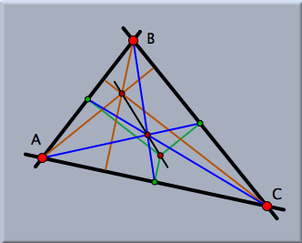
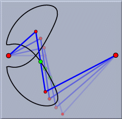
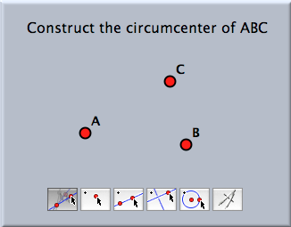
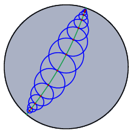
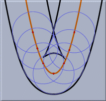
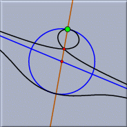
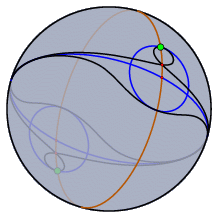
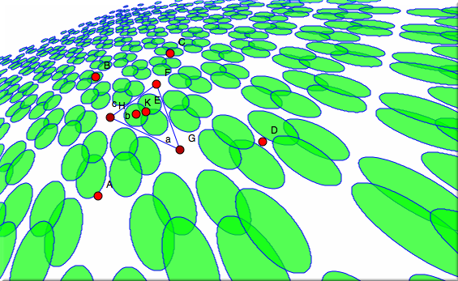
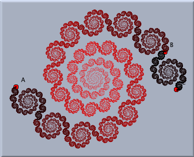

A Dynamic Geometry Program
Here we will briefly sketch how to use Cinderella.2 as a plain geometry program (without taking advantage of the scripting facilities and the simulation engine). In particular, we will emphasize several application areas in which it is advantageous to use
Cinderella.
Sample Applications
The application areas of
Cinderella reach from pure Euclidean (and non-Euclidean) geometry via physics (optics, for example) to computational kinematics and computer-aided design (CAD). The following sample applications offer potential scenarios in which you can benefit by using
Cinderella.
Exact Drawings
Suppose that you are writing a scientific publication for which you need one or more figures. When the drawings are a bit more complicated, it is usually almost impossible to produce a perfect one on the first attempt.
 |
| The Euler line of a triangle |
Either you will have many elements in almost the same place, or some parts of the figure will not fit onto the page.
With
Cinderella you start by making a computer sketch of a construction. This sketch might not look like the final drawing you expected. However, it provides all the relations that are essential for the construction. After you have made a sketch, you select the base elements and move them around until the picture satisfies all your aesthetic requirements. During the "move phase" you will always have a valid instance of your geometric construction. Finally, you use
Cinderella's inspector to adjust the color and size of each geometric element.
Geometric Calculator
Sometimes it happens that you want to get a feeling for some geometric situation. Either you have read something interesting in a geometry book or you have a new idea yourself.
You do the construction with
Cinderella and start to play with it. Through geometric exploration you gain new insights, and often hidden properties of the construction are revealed.
Cinderella's mathematically consistent implementation ensures that no strange effects occur that do not come genuinely from the configuration.
 |
| Dynamics of a three-bar linkage |
When you want to communicate your research to other colleagues, you can create an interactive web page and make it available on the Internet. Then your colleagues will have instant access to the configuration and can interact with it locally in their Java-enabled web browsers.
Interactive Worksheets and Student Exercises
Another interesting application is the generation of interactive worksheets or student exercises. With Cinderella it is easy to export any construction to the internet. By this you can create an infinite variety of interactive mathematical worksheets. By suitable programming techniques it is even possible to create interactive student exercises. Imagine that you want to teach students how to construct the circumcenter of a triangle using only straightedge and compass. First you do the construction yourself. Using this sample construction you can create an exercise that guides a user step by step through the construction task. The required programming techniques are presented in the section
Interactive Exercises.
The students can solve the exercises on their own computers and arrive at a solution completely by themselves or by following hints you have provided. No matter what construction a student may have used to solve the problem,
Cinderella's integrated automatic theorem-checking facilities can decide whether it is correct. The student's creativity for finding a solution is not restricted by the program.
 |
| An exercise for students |
Design and Features
Several major design goals guided us in the development of
Cinderella. We want to mention the three most important ones to give you an impression of the overall architecture of the program.
General Approaches
Cinderella is designed to cover a wide range of geometric disciplines. The program provides "native support" for
Euclidean geometry,
hyperbolic geometry,
elliptic geometry, and
projective geometry.
This means that you do not have to simulate hyperbolic geometry by making complicated Euclidean constructions. You can use the "hyperbolic mode" of
Cinderella and the constructions will behave like elements of the hyperbolic plane.
Cinderella achieves this by implementing very general mathematical approaches to geometry that form a common background for all of the areas above. Much of the mathematics behind
Cinderella makes use of the great, and unfortunately almost forgotten, geometric achievements of the geometers of the nineteenth century. We would like to mention just a few of them:
Monge and
Poncelet, who "invented" projective geometry;
Plücker,
Grassmann,
Cayley, and
Möbius, who developed a beautiful algebraic language to deal with projective geometry;
Gauss,
Bolyai, and
Lobachevsky, who "discovered" what is today called hyperbolic geometry; and finally,
Klein,
Cayley, and
Poincaré, who managed to obtain a unified description of Euclidean and non-Euclidean geometries in terms of projective geometry and complex numbers. For an excellently written and exciting introduction to the historical development of geometry in the nineteenth century we recommend the book of
Yaglom [Yag88]. In addition, the historical book by Felix Klein
historical book by Felix Klein [Kle28] is a very interesting introduction into this topic.
 |
| Hyperbolic circles of equal size |
Projective geometry forms the background for the incidence geometry part of
Cinderella, and
Cayley-Klein geometries form the backbone for the metric part of
Cinderella.
Mathematical Consistency
To put it metaphorically, "The geometric constructions done with
Cinderella should behave as if they lived in a reasonable geometric universe. In this universe no unnatural things should happen."
 |
| Offset curve of a parabola, a challenge for most CAD systems |
Other systems for interactive geometry suffer from mathematical inconsistencies. You do a construction, drag around the base elements, and suddenly one part of the construction jumps from one place to another. This behavior is unfortunately common even in software systems for parametric CAD.
Cinderella completely resolves this problem by using a new theory. It makes use of features from
complex analysis and merges them with the "old geometry" mentioned above.
Based on this theory, it was possible to equip
Cinderella with an
automatic theorem checker that governs most of the internal decisions
Cinderella makes. This theorem checker is also used for automatic feedback operations in student exercises. Another benefit of this approach is that you have a generic tool to construct correct and complete geometric loci, which are real branches of algebraic curves.
Modular Design
Cinderella is designed to be as modular as possible. This architecture makes
Cinderella well prepared for further extensions in many directions.
 | |
 |
| Conchoidal curve in a Euclidean… | |
…and in a spherical view |
| |
Even the present release benefits from the modular approach. For instance, it is possible to view the same geometric constructions simultaneously in many geometric contexts. A construction in hyperbolic geometry can be simultaneously displayed, and manipulated, in the "Poincaré model" of hyperbolic geometry and in the "Beltrami-Klein model." The simultaneous use of different views makes it possible to gain a deeper understanding of a configuration. For example, the "behavior at infinity" of a configuration becomes immediately visible in a spherical view.
Transformations and Transformation Groups
Cinderella provides powerful support for all kinds of geometric transformations. This often makes it possible to encapsulate high-level geometric operations into a very simple construction principles. Transformations are used in several contexts. Cinderella.2 supports simple reflections, translations, and rotations, as well as projective transformations and Möbius transformations.
Projective transformations are a very useful tool for constructing perspectivally correct drawings of three-dimensional scenes. Furthermore, Cinderella provides facilities for constructing transformation groups generated by several transformations.
 |
| Perspective view of an ornament |
For example, the picture above was created as the perspective image of the application of a transformation group to a circle. The transformation group was generated by 60° rotations around the corners of a regular triangle.
Fractals
Cinderella also provides a simple approach for the construction of fractal structures. The fractals constructible by Cinderella are so-called iterated function systems. They are constructed using a collection of geometric transformations. The iterated function system is a cloud of points that is self-similar with respect to the defining transformations. Using the interactive features of Cinderella, the program provides a unique experimental environment for the exploration of spaces of fractal objects.
 |
| A simple fractal |